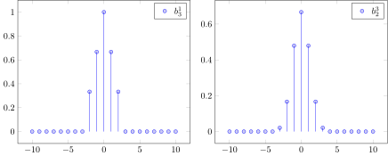
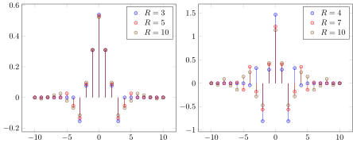

Filters
The packages supports discrete B-splines as defined by
B-Spline Signal Processing: Part I`Unser et al., IEEE TRANSACTIONS ON SIGNAL PROCESSING, VOL. 41, NO. 2
In the figure below we show two examples of such discrete B-splines, namely, $b^1_3$ and $b^3_2$
[.pdf], [generated .tex], [generated .tikz]

For oversampled discrete B-splines ($m>1$) there exists compact duals, i.e., signals, $g$, such that
Their support is restricted to $k=-R,\dots,R$. Below you see some compact dual signals for the discrete B-splines above.
[.pdf], [generated .tex], [generated .tikz]

CardinalBSplines.bn — Method.bn(n::Int, ::Type{T}=Float64)Discrete B-spline signal of degree n and period mN.
Implements the signals of B-Spline Signal Processing: Part I
Unser et al., IEEE TRANSACTIONS ON SIGNAL PROCESSING, VOL. 41, NO. 2
CardinalBSplines.bnm — Method.bnm(n::Int, m::Int, [N::Int, ]::Type{T}=Float64)Discrete B-spline signal of degree n and oversampling m. If 'N' is specified the signal is periodic with period Nm.
Implements the signals of B-Spline Signal Processing: Part I
Unser et al., IEEE TRANSACTIONS ON SIGNAL PROCESSING, VOL. 41, NO. 2
CardinalBSplines.bsplinesignal — Method.bsplinesignal(n::Int, [, m::Int] ::Type{T}=Float64)Discrete B-spline signal of degree n and oversampling m.
Implements the signals of B-Spline Signal Processing: Part I
Unser et al., IEEE TRANSACTIONS ON SIGNAL PROCESSING, VOL. 41, NO. 2
CardinalBSplines.b̃nm — Method.b̃nm(n::Int, m::Int, N::Int, ::Type{T}=Float64)Least squares dual of bnm:
$b̃nm(k)= \left[\left([bnm*bnm]_{↓m}\right)^{-1}\right]_{↑m}*bnm(k)$.CardinalBSplines.periodicbsplinesignal — Method.periodicbsplinesignal(n::Int, m::Int, N::Int, ::Type{T}=Float64)Discrete B-spline signal of degree n, oversampling m and period mN.
See also bsplinesignal
CardinalBSplines.snm — Method.snm(n::Int, m::Int, N::Int, ::Type{T}=Float64)The coefficients of b̃nm in bnm, i.e.,
$\tilde bnm(k) = [snm]_{\uparrow m}*bnm(k)$